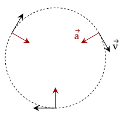
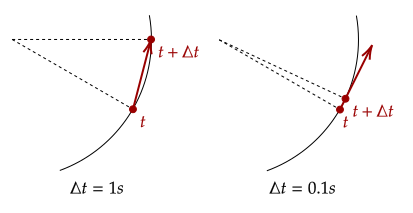
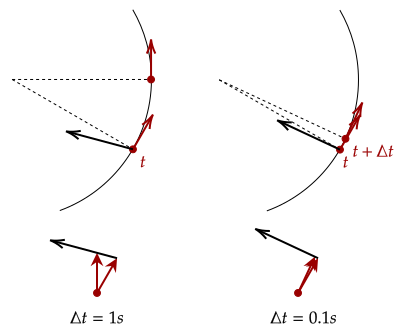
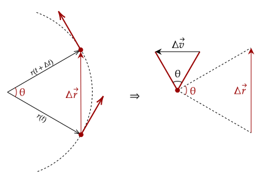
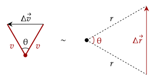
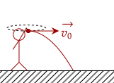

To conclude our brief overview on kinematics, we consolidate all that we have learned (with changing velocities and acceleration) with a study on things going around other things.
We observe this phenomenon a lot in our lives. The Earth we stand on is going around the sun, while the moon goes around us; the blades on an electric fan move around its pivot. This type of motion is called circular motion.

Circular motion is described as when a particle goes around in a circle. One may notice that in the above figure the speed is constant; the magnitude of how fast it is going around the circle is the same. However, the velocity changes, as the direction of movement changes.
Yes, you can stay in constant speed while accelerating, given that the acceleration changes the velocity's direction and not the magnitude; like in circular motion.
This reliance on acceleration means you can't turn or change direction unless there is an acceleration acting upon you. Further, while the magnitude of acceleration can be constant, the direction of acceleration also changes while turning, so it can't be constant.
It is usually much easier to describe circular motion by how fast the object revolves around the center, or how long it takes to go around a circle. Thus, we define two new terms.
To get the period, recall the
Another thing to note is that in this time , the particle moves 360° around the circle or in
We first note that one revolution is 360° or 2π rad. Thus, 30rev/s is 60π rad/s.
Given there is 40s, that means a total of 2400π radians has been travelled.
As said, the direction of the velocity of the particle changes over time. What is the direction of this velocity at any given time? We go back to how we defined

As we can see, the velocity of the particle seems to go tangent to the circle as the time between the two instances () approaches zero. Thus, at any given instance, we can draw the velocity as tangent to the circle.
Now, how does this direction change? Since the velocity changes, that means there is an acceleration; this acceleration causes the direction change.
Now, we also want to know where this acceleration points at any given time, so let's do what we did again, but with velocity again.

We now see that the acceleration points closer and closer to the center of the circle. Thus, we can say that the instantaneous acceleration of the particle points towards the center. This acceleration's property gives it a special name.
The name centripetal means "center seeking", which aligns with what we saw. Of course, it would be nice if we can quantify this value. To get this, we must use our knowledge of geometry and similar triangles.
Since we've got the direction down, we only now care about the magnitude of the acceleration. Thus, we can disregard the direction of each of the vectors.

Looking at the figure, the left side shows how over a period , the particle makes an angle θ. Further, since we rotated the velocity vector to just be tangent to the circle (adding 90° to both angles), this angle θ also shows up when we analyze both velocities at the same time, on the right side.
Also note one property of the circle: the two position vectors are just
Via

Writing out the proportions of the triangle gives us a useful thing to note. Noting that the Δv and Δr sides correspond to each other,
Now, recall the original definition we had for acceleration. We can substitute in our newfound value for Δv to get a new value.
Notice the ; as Δt approaches zero, this becomes the instantaneous velocity, as we saw previously. This is the same as taking the derivative of position with respect to time, which is velocity. Thus, the centripetal acceleration can be computed via the following equation.
Analyzing the equation, there are two things we can see. The first is that as the speed of the object increases, more acceleration is needed to keep it in orbit; second, as the radius decreases, the more acceleration is needed to keep the object going around.
We are given the constant speed and the radius of motion, thus we can compute the acceleration quite easily.
The period is 1d, which is 86400s. We also have the distance in kilometers, which is 42,250,000m. We first get the speed.
We get the speed is about 3072.51m/s. We then plug this into our equation to get the centripetal acceleration.
This time, we are given the acceleration and radius, and need to find the velocity. Note that 6.8g means 6.8 times the gravitational acceleration, or 9.8m/s².
This gives us a speed of approximately 19m/s. Now, with the speed, we need to get the angular velocity. We first get the period using our equation.
With this period, we can get the angular speed. We need them in revolutions per second, and we know 2π = 1 rev, so we just use that instead.
What could happen if there were no acceleration? Then, there would be nothing to stop the particle from just going straight forward, as seen in the following problem.

While it may not be obvious, the first half of this problem is a projectile motion problem. We need the initial velocity, and we are given the initial height. We first get the time of flight.
We find out that the time elapsed is . To get the initial velocity, we use the displacement.
Thus, we get the speed was 17.74m/s. Now, we can get the centripetal acceleration.
Analyzing the equation for the centripetal acceleration, the speed has a direct relationship on the centripetal acceleration; if it goes up, the centripetal acceleration goes up.
However, since the velocity is squared, the effect on the centripetal acceleration is also squared.
Thus, as the speed is doubled and halved, the centripetal acceleration is quadrupled (4x) and quartered (1/4x) respectively.
For the radius, since it is in the denominator, it features an inverse relationship. Thus, as the radius is doubled and halved, the centripetal acceleration is halved (1/2x) and doubled (2x) respectively.